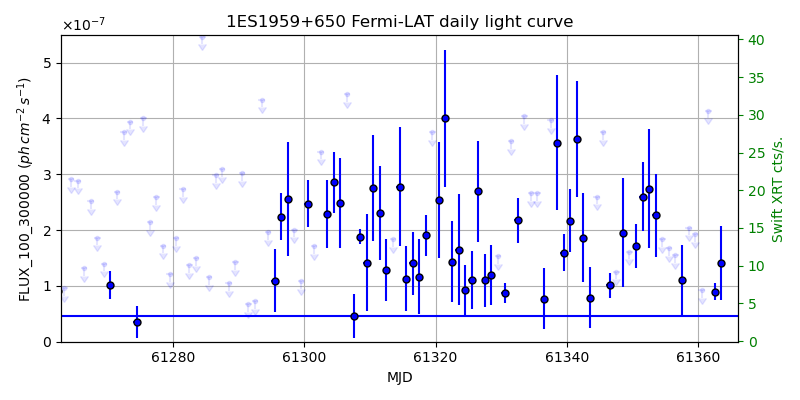
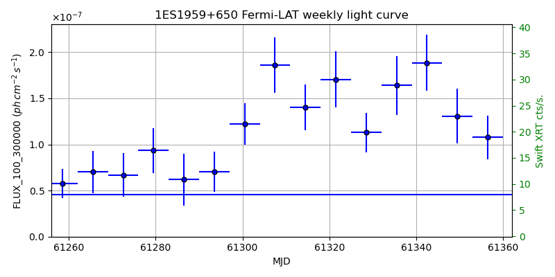
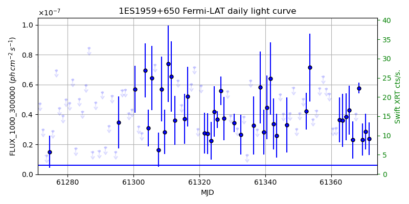
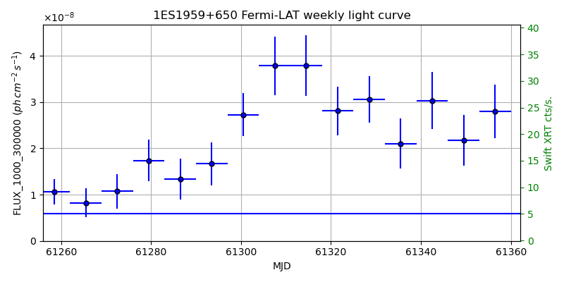

LAT Lightcurve site: https://fermi.gsfc.nasa.gov/ssc/data/access/lat/msl_lc/source/1ES_1959p650
Swift site: https://www.swift.psu.edu/monitoring/source.php?source=1ES1959+650
NED: Query
Time of last update of this page: UT: 2026-11-28 16:26 (MJD: 61372.685)
| Property | Value |
|---|---|
| R.A. | 20:00:00.00 |
| Dec. | 65:08:56.4 |
| z | 0.047 |
| 3FGL SpectrumType | PowerLaw |
| 3FGL PL Index | 1.88 |
| 3FGL Flux_100_300000 | 4.53e-08 1 / (s cm2) |
| 3FGL Flux_1000_300000 | 5.90e-09 1 / (s cm2) |
| 3FGL Flux >200 GeV | 5.42e-11 1 / (s cm2) |
| 3FGL Extrap. Crab >200 GeV | 0.23 |
| 3FGL Flux After EBL Absorption >200GeV | 4.19e-11 1 / (s cm2) |
| 3FGL EBL Crab Fraction >200GeV | 0.18 |

| MJD | dMJD | Flux | dFlux | Frac3FGL | FracCrab>200GeV | EBLFracCrab>200GeV |
|---|---|---|---|---|---|---|
| 61367.50 | 0.50 | 1.90e-07 | 7.92e-08 | 4.18 | 0.97 | 0.75 |
| 61368.50 | 0.50 | 3.36e-07 | 7.88e-08 | 7.41 | 1.72 | 1.33 |
| 61369.50 | 0.50 | 1.55e-07 | 6.52e-08 | 3.43 | 0.79 | 0.61 |
| 61370.50 | 0.50 | 1.73e-07 | 5.98e-08 | 3.81 | 0.88 | 0.68 |
| 61371.50 | 0.50 | 1.66e-07 | 7.75e-08 | 3.67 | 0.85 | 0.66 |

| MJD | dMJD | Flux | dFlux | Frac3FGL | FracCrab>200GeV | EBLFracCrab>200GeV |
|---|---|---|---|---|---|---|
| 61335.50 | 3.50 | 1.64e-07 | 3.21e-08 | 3.61 | 0.84 | 0.65 |
| 61342.50 | 3.50 | 1.89e-07 | 3.05e-08 | 4.16 | 0.96 | 0.74 |
| 61349.50 | 3.50 | 1.31e-07 | 2.98e-08 | 2.89 | 0.67 | 0.52 |
| 61356.50 | 3.50 | 1.08e-07 | 2.37e-08 | 2.38 | 0.55 | 0.43 |
| 61363.50 | 3.50 | 1.15e-07 | 2.06e-08 | 2.53 | 0.59 | 0.46 |

| MJD | dMJD | Flux | dFlux | Frac3FGL | FracCrab>200GeV | EBLFracCrab>200GeV |
|---|---|---|---|---|---|---|
| 61367.50 | 0.50 | 4.04e-08 | 0.00e+00 | 0.00 | 0.00 | 0.00 |
| 61368.50 | 0.50 | 5.77e-08 | 3.52e-09 | 9.79 | 2.27 | 1.76 |
| 61369.50 | 0.50 | 2.32e-08 | 1.07e-08 | 3.93 | 0.91 | 0.70 |
| 61370.50 | 0.50 | 2.86e-08 | 1.20e-08 | 4.85 | 1.12 | 0.87 |
| 61371.50 | 0.50 | 2.37e-08 | 1.09e-08 | 4.02 | 0.93 | 0.72 |

| MJD | dMJD | Flux | dFlux | Frac3FGL | FracCrab>200GeV | EBLFracCrab>200GeV |
|---|---|---|---|---|---|---|
| 61335.50 | 3.50 | 2.10e-08 | 5.40e-09 | 3.56 | 0.83 | 0.64 |
| 61342.50 | 3.50 | 3.03e-08 | 6.17e-09 | 5.14 | 1.19 | 0.92 |
| 61349.50 | 3.50 | 2.17e-08 | 5.50e-09 | 3.69 | 0.85 | 0.66 |
| 61356.50 | 3.50 | 2.80e-08 | 5.81e-09 | 4.76 | 1.10 | 0.85 |
| 61363.50 | 3.50 | 3.23e-08 | 5.46e-09 | 5.49 | 1.27 | 0.98 |
--------------------------------------------------------- Using user-supplied coords: 20:00:00.00 65:08:56.4 2000 --------------------------------------------------------- FLWO UT night of: 2026-11-29 Local Sid. @ Midnight: 04:08 Sunset (-15.0) (local, UT): 18:31 01:31 Sunrise (-15.0) (local, UT): 05:53 12:53 Moonrise (local, UT): 21:57 04:57 Moonset (local, UT): Moon phase: 0.72 --------------------------------------------------------- AzTime LSID UT Obj_el Obj_az Mn_el Mn_az Sep. --------------------------------------------------------- 18:31 22:39 01:31 48.7 336.1 -32.9 32.1 95.6 19:01 23:09 02:01 46.0 333.7 -29.4 38.9 95.7 19:31 23:39 02:31 43.0 332.1 -25.4 45.0 95.7 20:01 00:09 03:01 40.0 331.0 -21.0 50.6 95.8 20:31 00:39 03:31 36.9 330.6 -16.2 55.6 95.8 21:01 01:09 04:01 33.7 330.6 -11.1 60.2 95.8 21:31 01:39 04:31 30.6 331.0 -5.4 64.5 95.9 22:01 02:09 05:01 27.5 331.8 0.4 68.5 95.9 22:31 02:39 05:31 24.6 333.0 5.8 72.2 96.0 23:01 03:10 06:01 21.7 334.5 11.6 75.8 96.0 23:31 03:40 06:31 19.1 336.3 17.5 79.4 96.1 00:01 04:10 07:01 16.6 338.4 23.6 82.9 96.1 00:31 04:40 07:31 14.4 340.7 29.7 86.5 96.2 01:01 05:10 08:01 12.4 343.2 35.8 90.3 96.2 01:31 05:40 08:31 10.7 345.9 42.0 94.4 96.3 02:01 06:10 09:01 9.3 348.7 48.1 99.1 96.3 02:31 06:40 09:31 8.2 351.7 54.2 104.7 96.4 03:01 07:10 10:01 7.5 354.8 60.1 111.7 96.5 03:31 07:40 10:31 7.1 358.0 65.6 121.1 96.5 04:01 08:10 11:01 7.0 1.1 70.5 134.7 96.6 04:31 08:40 11:31 7.3 4.3 74.0 154.7 96.7 05:01 09:11 12:01 8.0 7.4 75.2 181.1 96.8 05:31 09:41 12:31 9.0 10.4 73.6 206.8 96.9 05:53 10:02 12:53 9.9 12.5 71.0 221.2 97.0 --------------------------------------------------------- Dark hours >55 deg.: 0.00